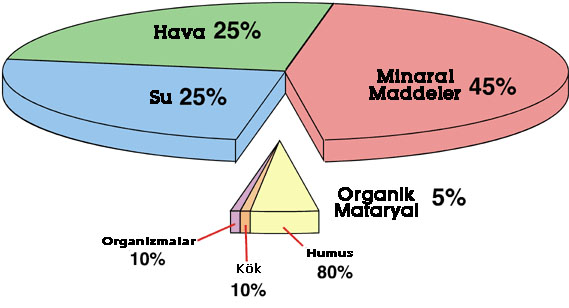

Mineraller, organik maddeler, su ve hava gibi toprağın temel bileşenleri.
Toprak, farklı bileşenlerin kompleks bir karışımıdır:
Mineraller: Toprağın inorganik bileşenleridir. Kuvars, feldispat, kil gibi mineraller, toprağın fiziksel özelliklerini belirler. Bunlar, kayalardan parçalanan materyallerin toprak oluşumu sırasında meydana getirdiği temel yapı taşlarıdır.
Organik Madde: Bitki ve hayvan kalıntılarından kaynaklanan organik maddedir. Bu maddeler toprağa humus katarak toprağın yapısını ve verimliliğini artırır.
Hava: Toprak içinde bulunan boşluklarda hava bulunur. Bu hava, bitkilerin köklerine oksijen sağlar ve toprakta yaşayan organizmalar için gereklidir.
Su: Toprak, suyu tutabilen ve bitkilerin büyümesi için gerekli olan nem düzeyini koruyabilen gözeneklere sahiptir. Su, bitkilerin besinleri alması için de taşıyıcı görevi görür.
Bu bileşenlerin oranları ve içerikleri, toprağın tipine, verimliliğine ve bitkilerin nasıl büyüdüğüne doğrudan etki eder. Toprak verimliliği, doğru oranda mineraller, organik madde, hava ve suyun bulunmasıyla sağlanır. Bu bileşenlerin dengesi, tarımsal üretimde önemli bir faktördür.
Bilgi almak için tıkla.